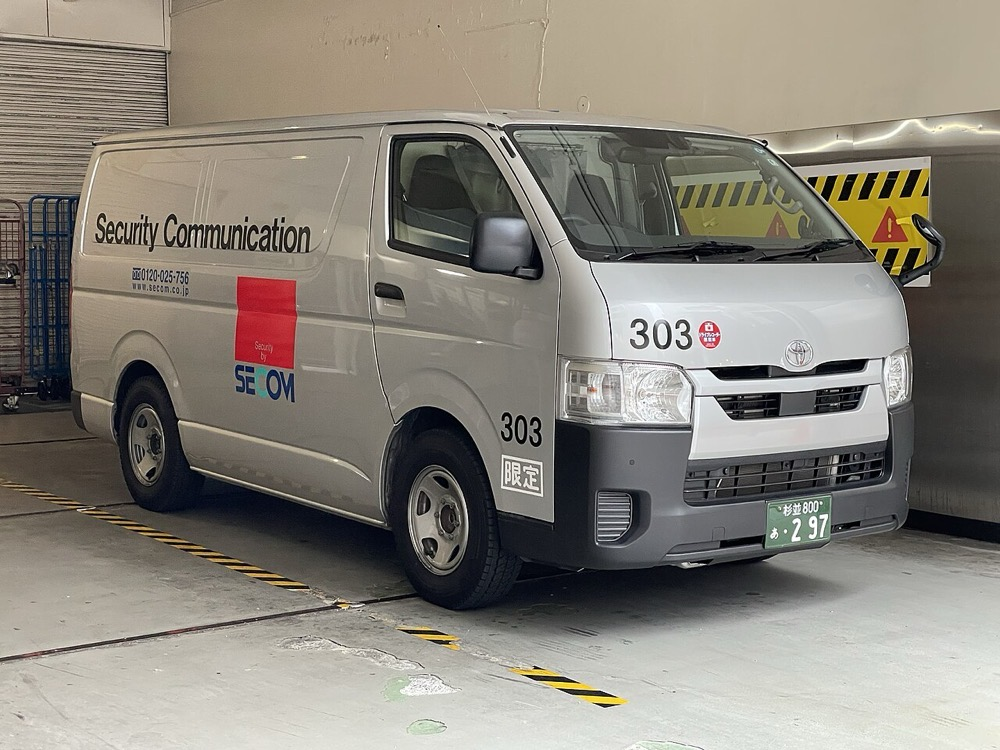
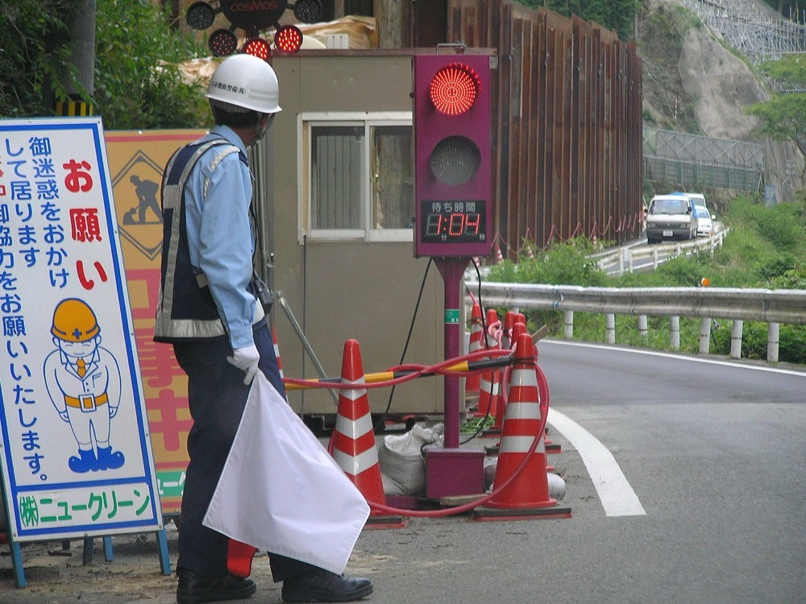

後継者がいない地方の警備会社を、融資を使って1社ずつ株式取得で買収する。買収した会社の常駐警備と巡回警備の一部を、機械警備と遠隔監視に置き換えて人件費率を下げる。施設の管理会社と建設会社に、警備員と機器を組み合わせた警備を法人営業で販売する。
全国警備業協会が2025年末に実施した調査では、回答した5,210業者の売上高の総額は3兆5,057億円である1。警備業法第4条の認定を受けた業者は2025年12月末に10,949業者で、回答はその約48%に当たる1。
推計 全体の売上高 ＝ 回答分 ＋ 未回答の業者数 × 回答業者の平均売上 × 規模係数
回答業者の平均売上は3兆5,057億円 ÷ 5,210 ≒ 6.7億円である。未回答の5,739業者は小規模が多いと考え、規模係数を0.25と仮定する。3兆5,057億円 ＋ 5,739 × 6.7億円 × 0.25 ≒ 4.5兆円となる。規模係数は本ページの仮定値である。
業者の規模は小さい。警備員100人未満の業者が9,885業者で全体の90.3%を占め、営業所が1か所だけの業者は9,219業者で84.2%である1。業務の区分では、交通誘導を行う業者が8,241業者で75.3%を占める。施設警備は6,690業者で61.1%、機械警備は512業者で4.7%である1。
警備サービスの世界市場を約2,590億ドルとする報告がある8。推計は調査会社により大きく異なる。最大手の一つであるスウェーデンのSecuritasは2024年の売上高が1,619億スウェーデンクローナである9。米国のAllied Universalは売上高約200億ドルとする推計があり7、2022〜2024年に24件の買収を行ったとされる10。海外の大手は買収で規模を拡大してきた。
| 年 | 変化 | 数値 |
|---|---|---|
| 2021〜2025年 | 警備員数は横ばい | 589,938人から596,985人へ1.2%増に留まる1 |
| 2025年末 | 警備員の高齢化 | 70歳以上が129,012人で21.6%、60歳以上の合計は47.3%1 |
| 2025年末 | 在職1年未満の警備員 | 109,450人で18.3%。入れ替わりが大きい1 |
| 2021〜2025年 | 機械警備業者の集約 | 機械警備業者は512業者で前年比30業者減。対象施設は352万5,422か所で前年比2.9%増。1業者当たりの対象施設は5,713から6,886へ21%増1 |
| 2021〜2025年 | 機械警備の省人化 | 専用巡回車1台当たりの対象施設は252から319へ27%増1 |
| 2024年 | 警備業法施行規則等の改正 | 認定証を廃止し標識の掲示に変更した。基地局所在地の公安委員会の承認を受ければ、専任の機械警備業務管理者を置かなくてよい場合を定めた3 |
警備員の総数は増えず、高齢層の比率が上がっている。一方で機械警備は業者数が減り、1業者当たりの対象施設が増えている。人が行う警備から機器で行う警備への置き換えと、機械警備業者の集約が同時に進んでいる。後継者がいない小規模業者の譲渡先が必要になる時期と重なる。
| 事業者 | 売上高 | 備考 |
|---|---|---|
| セコム | 1兆2,569億円 | 2026年3月期の連結4。セキュリティサービスは6,606億円とする第三者の集計があるが、本ページでは決算短信で確認できなかった5 |
| ALSOK 綜合警備保障 | 5,970億円 | 2026年3月期の連結、前期比8.2%増6。警備以外の事業を含む |
| その他 | − | 10,949業者のうち警備員1,000人以上は57業者1 |
連結売上を2025年の回答分3兆5,057億円と比べると、ALSOKは約17.0%に当たる。セコムのセキュリティサービスを6,606億円とすれば約18.8%で、上位2社で約36%となる。ただし両社の連結には警備以外の事業も含まれるため、比率は目安である。
現行の警備業法には、合併・分割・相続による認定の承継を定めた条文はない2。第12条は廃止や死亡の届出を定めるだけである2。附則は本ページでは確認できなかった。このため買収は株式取得で行う。法人が同じであれば認定は続き、役員の変更は第11条の変更届出で扱う2。新たな役員が第3条の欠格事由に該当しないことが条件である。事業譲渡や合併で会社を統合すると、受け皿の法人が認定をもたない場合は新たに認定を受けなければならない。
機械警備は、基地局ごとに資格者証をもつ機械警備業務管理者を置き、基地局の所在する都道府県の公安委員会に届け出る2。第43条は、事故の情報を受けた後に警備員が速やかに現場へ向かえる即応体制を求める2。機械警備業務管理者の資格者証をもつ警備員は全国で8,076人である1。
地方の警備会社には、上位2社の機械警備の駆け付けや常駐業務を受託している会社がある。買収した会社の売上のうち上位2社からの受託がどれだけあるかは、買収前の調査で確認する。受託の比率が高い会社を買収すると、上位2社と競合する機械警備に移った時点で受託を失う可能性がある。

首位の条件 国内の警備市場3.5〜4.5兆円で首位になるには、セコムとALSOKの警備売上を上回る必要があり、10年では届かない。首位を狙えるのは地域と業務を限った市場である。条件は3つある。①1つの地方ブロックで施設警備と交通誘導の会社を集中して買収し、警備員の配置を会社間で融通できる密度を確保すること。②自社の基地局を1か所もち、買収した会社の常駐ポストを順に機械警備と遠隔監視に切り替えること。③管理会社と建設会社に、人員と機器を一括で提案できる規模に達すること。
サーチファンド型で始める。創業者が自ら買収対象を検索し、買収後は社長として経営する。投資家の資金は入れず、自己資金と融資で1社目を買収する。
| 用途 | 金額 | 検証すること |
|---|---|---|
| 検索期間の生活費と活動費 6か月 | 500万円 | 地銀と税理士の紹介で、条件に合う案件を何件得られるか |
| 財務・労務・法務の調査、仲介手数料 | 800万円 | 未払残業代、社会保険の加入状況、行政処分の履歴 |
| 1社目の株式取得の自己資金 | 2,300万円 | EBITDA3,000〜4,000万円の会社を約1.6億円で取得できるか |
| 遠隔監視カメラとセンサーの試験導入 | 400万円 | 常駐ポストのうち機器に置き換えられる比率と、顧客の受け入れ |
| 合計 | 4,000万円 |
| 月 | 計画 |
|---|---|
| 1〜3月目 | 対象地域を1つの地方ブロックに絞る。売上高3〜5億円・警備員150〜250人・後継者不在・顧客が10社以上に分散、の条件を満たす会社を30社集める |
| 4〜6月目 | 3社と面談し1社と基本合意する。調査で労務、行政処分歴、上位2社からの受託比率を確認する |
| 7月目 | 株式を取得する。資金は自己資金2,300万円、日本政策金融公庫の事業承継向け融資7,200万円11、地銀の融資約4,500万円、売主への分割払い約2,000万円とする。役員変更を公安委員会に届け出る |
| 8〜12月目 | 旧経営者を顧問として残し、警備員と顧客の離反を防ぐ。施設警備の顧客3〜5社で遠隔監視を試験導入する。2社目の候補として、同じ地域で基地局をもつ機械警備業者を含めて3社まで絞る |
1年目の判定基準は2つある。警備員の離職率が買収前を上回らないこと。施設警備の常駐ポストの1割以上を、顧客の合意を得て機器との組み合わせに切り替えること。
| 段階 | 資金 | 金融機関 | 条件 |
|---|---|---|---|
| 1社目 1年目 | 事業承継融資、買収融資、売主の分割払い | 日本政策金融公庫 国民生活事業、地銀 | 公庫の限度は別枠7,200万円11。地銀は対象会社の営業キャッシュフローを返済原資とする。警備会社は車両以外の担保が少ない |
| 2〜5社目 2〜4年目 | 持株会社による買収融資、資本性劣後ローン | 地銀、商工中金、日本政策金融公庫 中小企業事業 | 資本性ローンの限度は15億円、期限一括返済で最長20年12 |
| 機器 毎年 | カメラ、センサー、巡回車のリース | リース会社 | 機器はリースで調達し、買収資金と分ける。月額の警備料金で回収する |
| 6社目以降 5年目以降 | シンジケートローン | メガバンク、地銀の協調融資 | 連結EBITDAの3〜4倍を上限に借りる |
| 年目 | 1 | 2 | 3 | 5 | 7 | 10 |
|---|---|---|---|---|---|---|
| グループ会社数 | 1 | 3 | 6 | 16 | 32 | 60 |
| 売上高 億円 | 4 | 12 | 28 | 90 | 220 | 500 |
| 営業利益 億円 | 0.2 | 0.7 | 1.8 | 6.3 | 17 | 40 |
| 累計投資 億円 | 1.6 | 5 | 12 | 40 | 100 | 230 |
| 借入残高 億円 | 1.5 | 4.5 | 10 | 30 | 70 | 150 |
| 年目 | 1 | 2 | 3 | 5 | 7 | 10 |
|---|---|---|---|---|---|---|
| グループ会社数 | 1 | 2 | 3 | 6 | 10 | 18 |
| 売上高 億円 | 4 | 7 | 11 | 25 | 45 | 80 |
| 営業利益 億円 | 0.12 | 0.25 | 0.45 | 1.2 | 2.5 | 4.8 |
| 累計投資 億円 | 1.6 | 2.8 | 4.5 | 10 | 18 | 32 |
| 借入残高 億円 | 1.5 | 2.5 | 3.8 | 8 | 13 | 22 |
前提
楽観でも10年目の売上高は500億円で、1,000億円の目安に届かない。届かせるには10年で約120社の買収が必要になり、年平均12社の統合を要する。保守では18社、売上高80億円に留まる。
楽観の売上高500億円は、回答分の市場3兆5,057億円の約1.4%である。ALSOKの連結売上5,970億円の約8%に当たり、国内の警備市場で10年以内に首位になる道筋は示せない。
首位を取りうるのは地方ブロック単位の市場である。推計4.5兆円のうち、九州・沖縄の人口比を約11%とすると約4,900億円で、1,000億円以上の条件を満たす。楽観の買収をすべてこの地域に集中すると、10年目の500億円は推計の約10%に当たる。上位2社の地域別の警備売上は公表されておらず、10%で首位になるかは確認できない。地域の人口比で市場を按分する方法も本ページの仮定である。
停止する位置は3つある。1つ目は1社目で警備員の離職が増え、配置を維持できず顧客を失う場合である。2つ目は機器への置き換えが顧客に受け入れられず、利益率が上がらない場合である。この場合は人件費の上昇分を価格に転嫁できるかだけで利益が決まる。3つ目は基地局と即応体制の投資が必要な規模に、5年目までに達しない場合である。
警備会社そのものの海外展開は想定しない。警備業は各国の許可制度の下にあり、日本の認定は海外で使えない。海外の大手はSecuritasやAllied Universalのように買収で規模を拡大しており910、後発の日本の中小グループが海外で買い手として競える見込みは低い。
| 順 | 国 | 理由 |
|---|---|---|
| 1 | タイ、ベトナム | 日系の工場と商業施設が多く、日本の顧客に随伴して遠隔監視を提供できる。外資規制の有無は本ページでは確認できなかった |
| 2 | 台湾、韓国 | 高齢化と人手不足が日本と同じ方向に進んでおり、省人化した警備の手法を輸出できる |
グローバルなインフラになる見込みは低い。
| # | 基準 | 判定 | 根拠 |
|---|---|---|---|
| 1 | 50年、魂を燃やし続けられるか | 創業者が判定 | |
| 2 | 10年以内に、国内市場規模1,000億円以上の市場でシェア1位になれるか | △ | 九州・沖縄の推計約4,900億円に買収を集中すれば楽観で10%に届くが、上位2社の地域別売上が非公表で首位かは判定できない |
| 3 | 4,000万円で始められ、融資で伸ばせるか | ○ | 公庫の承継融資と地銀融資で約1.6億円の1社目を取得できる。ただし担保が少なく、基地局の投資は別に要る |
| 4 | グローバルなインフラになり得るか | × | 警備は各国の許可制度の下にある国内産業で、海外は大手の買収で寡占が進んでいる |
| 5 | 営業力が最初の売上に直接結びつくか | ○ | 管理会社と建設会社への提案が受注数に直結する。交通誘導は価格で決まる案件が多い |
| 6 | 同じビジョンを共有する仲間を誘える事業か | 創業者が判定 | |
| 7 | 本業が早く現金を生み、返済と出資の原資になるか | ○ | 月額契約が多く設備投資が小さいため現金化は早い。利益率は5%前後で、大半は返済に充てられる |
| 8 | 投資先を束ねる群の中核になれるか | ○ | 施工・ビルメンテナンス・ソフトウェアの各事業が、グループの顧客施設を共通の需要にできる |
| 9 | 成長の資金源がA・B・Cのどれに当たるか | C | 買収対象の営業キャッシュフローを返済原資にした借入で買収する |
1. 警備員の離職と高齢化 60歳以上が47.3%を占め、在職1年未満が18.3%である1。買収後に離職が増えると配置を維持できない。対策は賃金体系を変える前に説明の期間を設け、機器への置き換えで夜間と高齢者の負担を減らすことである。高齢層の引退そのものは潰せない。
2. 認定と行政処分の引き継ぎ 株式取得では、過去の法令違反も法人に残る。2025年の警備業法等の違反は1,708件で、営業停止は12件、認定の取消しは1件である1。対策は買収前に公安委員会の処分歴と教育の記録を確認することである。合併で統合すると新たな認定が必要になるため、統合の方法は株式の保有に限られる。
3. 上位2社からの受託の喪失 地方の警備会社が上位2社から受託している場合、機械警備で競合した時点で取引を失う可能性がある。対策は受託比率の低い会社を優先して買収することである。比率が確認できない場合は潰せない。
4. 機器への置き換えが進まない 顧客が人の配置を求める場合や、検定合格警備員の配置が求められる現場では置き換えられない。置き換えが進まなければ、利益率は人件費と価格の差だけで決まる。対策は施設警備の夜間ポストから置き換えを始め、効果を数値で示すことである。

5. 最低賃金と金利の上昇 売上の大半が人件費であり、最低賃金が上がると利益率が下がる。借入残高は楽観の10年目で150億円で、金利が1ポイント上がると利払いは年1.5億円増える。価格転嫁と固定金利の比率で一部を抑えられるが、両方が同時に上がる局面は潰せない。